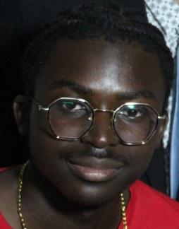
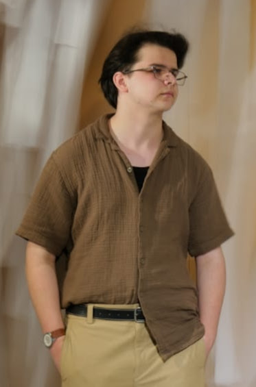

Qui sommes-nous ?
Deux étudiants vendéens à l'Université d'Angers
✦

Étudiant
Benjamin Tchibinda
Je m'appelle Benjamin Tchibinda, j'ai actuellement 18 ans et je suis en première année de licence informatique à l'Université d'Angers Mes centres d'intérêt sont le sport (ultimate) et les jeux vidéos

Étudiant
Nolan Crusson
Étudiant en informatique à l'Université d'Angers, je suis passionné par les jeux vidéo depuis tout petit. C'est cette passion qui m'a conduit vers la NSI au lycée, puis vers l'UA. Je dispose de bases solides en Python et en HTML/CSS.